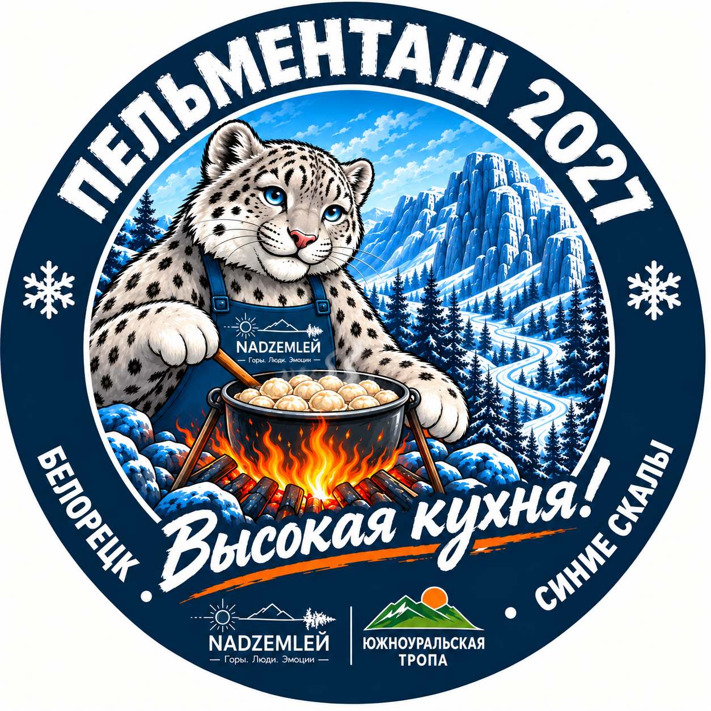
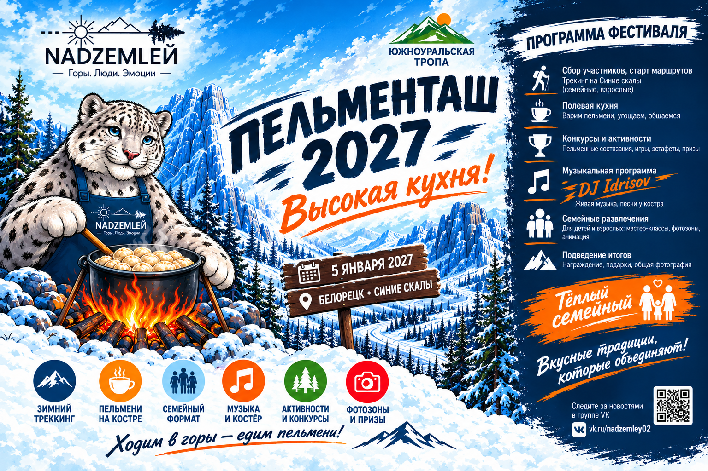
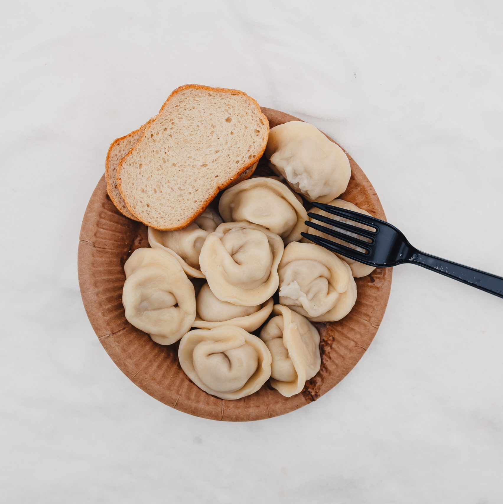
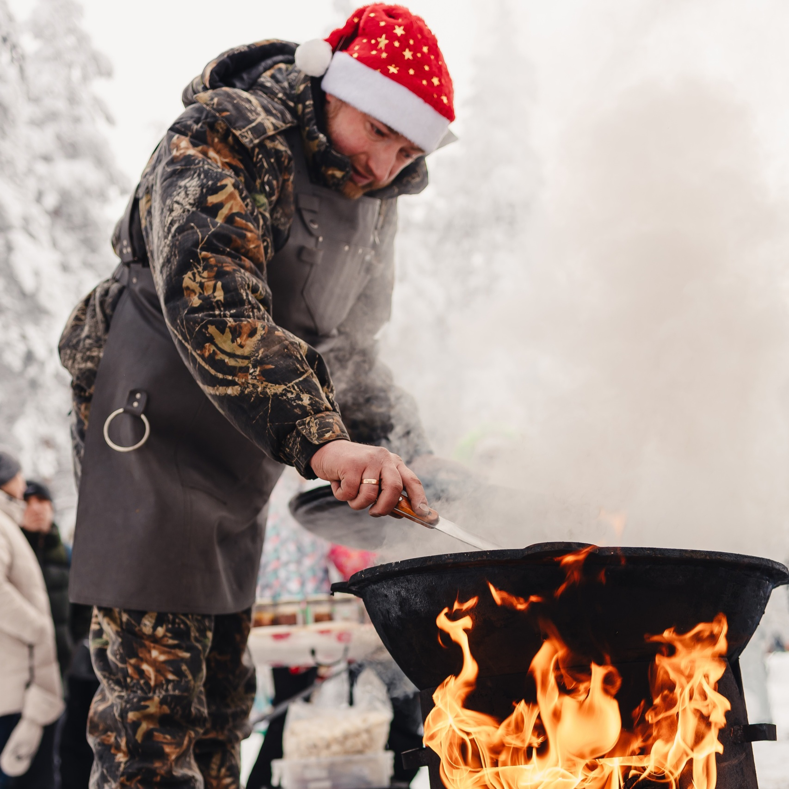
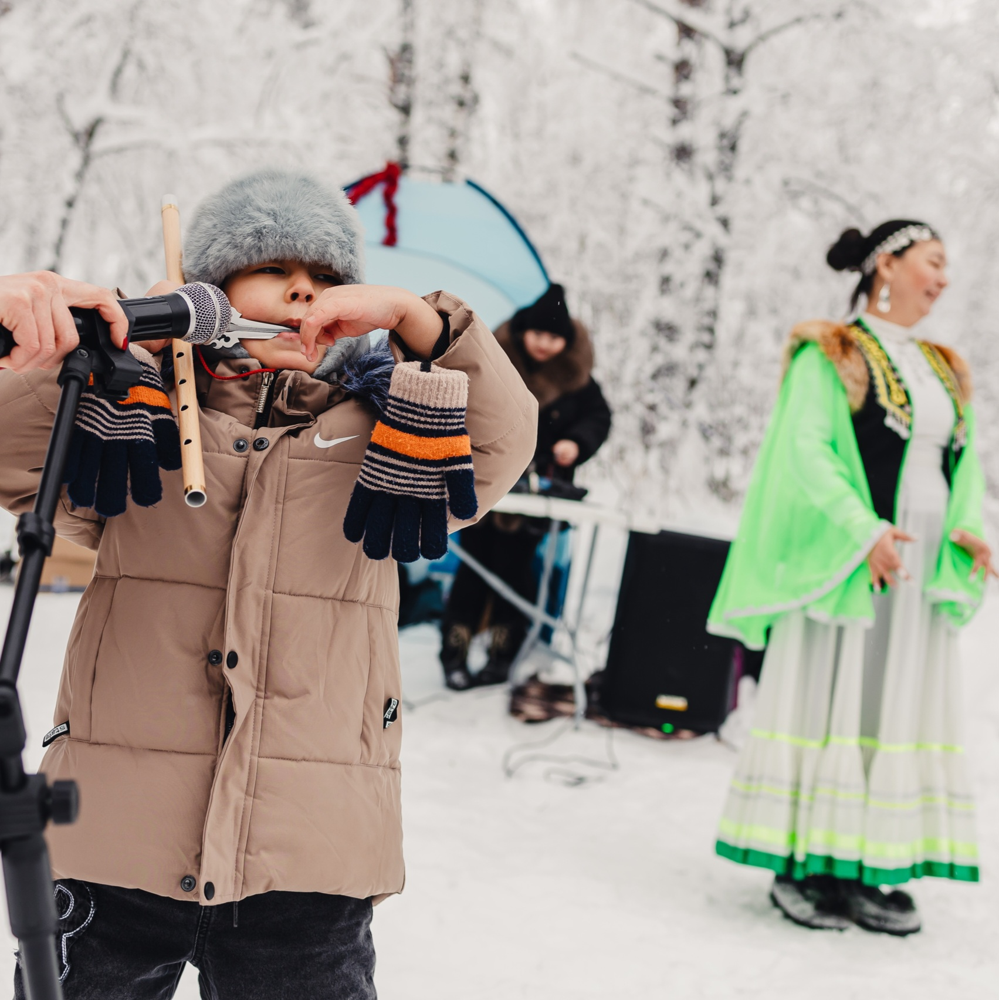
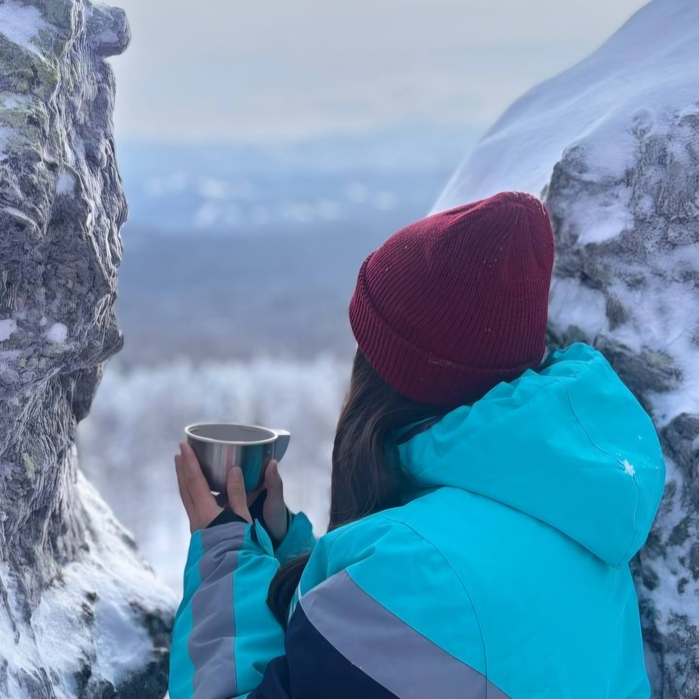
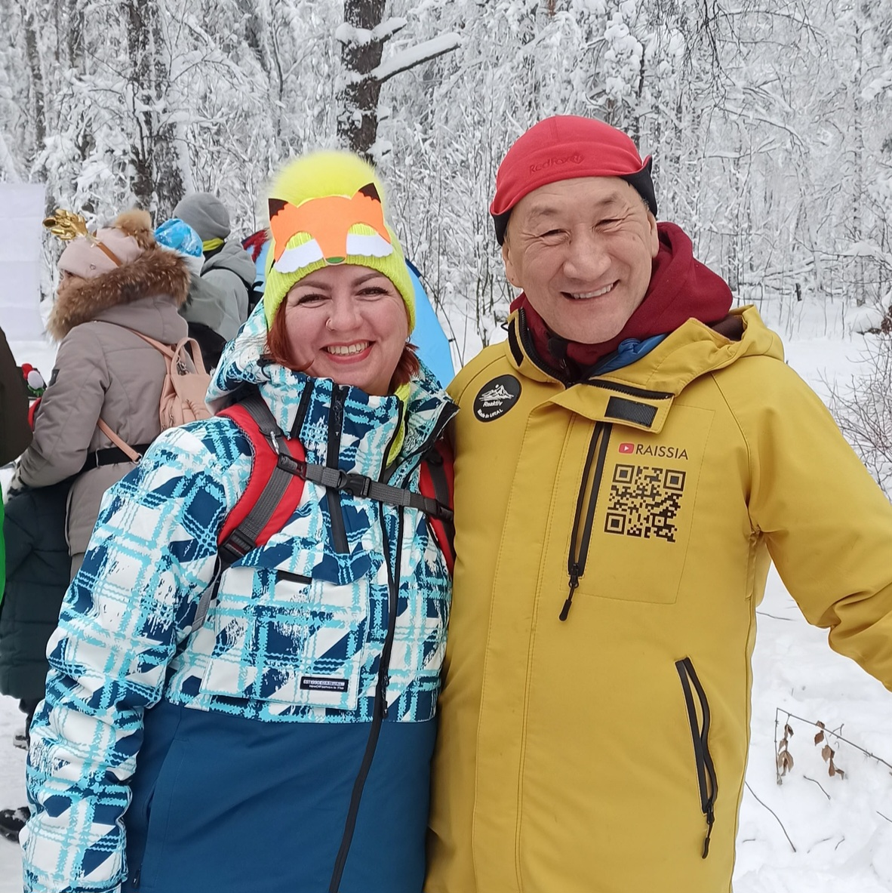
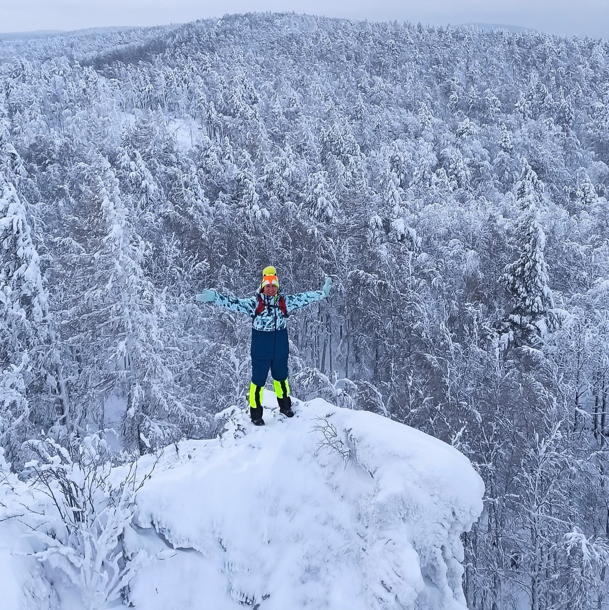

«Привет! Я — уральский барс Пельмешка, хозяин Синих Скал у Белорецка. Каждый январь я разжигаю котёл и варю пельмени для целых семей — приходите 5 января 2027-го, познакомимся у костра.»
Белорецк, Башкортостан
IV зимний семейный фестивальВысокая кухня!
Ходим в горы — едим пельмени!

«Пельменташ» родился в Белорецке из простой идеи: в новогодние каникулы выйти всей семьёй в зимние горы и сварить пельмени на костре. То, что начиналось как камерный поход туристической группы «Над Землёй», стало любимой семейной традицией Южного Урала: каждый январь мы возвращаемся на Синие скалы, чтобы встретиться у одного котла.
В январе 2026‑го фестиваль собрал более 500 гостей: котлы на костре, блины и самоварный чай, Дед Мороз со Снегурочкой, экскурсионный подъём по снежному лесу и живая флейта на вершине. В 2027‑м ждём вас снова — те же тропы, те же котлы, курай на вершине и новые друзья у костра.
Восхождение с гидом по Южноуральской тропе — семейные и взрослые маршруты.
Котлы на открытом огне, пельмени локальных производителей, самоварный травяной чай.
Детям до 5 лет — бесплатно. Мастер-классы, анимация, Дед Мороз и Снегурочка.
Курай на вершине, живая музыка, DJ‑сет и песни у костра.
Пельменные состязания, конкурс костюмов, эстафеты, награждение.
Инеевый лес, скальный гребень и вид на Ямантау — кадры на память.
5 января 2026, старт в 12:00. Приветствие ведущей и Дед Мороз со Снегурочкой, экскурсионный подъём по снежному лесу с видом со скал, живая флейта на вершине, пельмени из котлов, блины и пирожки, чай из больших самоваров, конкурсы, флешмобы и фотозоны.






Все цифры, отзывы и фотоальбомы января‑2026 — в сообществе фестиваля: vk.ru/pelmentash
5 января 2027 · праздничная поляна у Синих скал · программа — как в прошлом году
Единая цена для всех гостей. Детям до 5 лет — бесплатно.
Продажи открываются в сообществе vk.ru/pelmentash. Места на маршрутах ограничены безопасностью, поэтому не откладывайте билет на последний день.
На машине: из Уфы — 250 км по трассе Р‑316, из Магнитогорска — 80 км. Без машины: до Белорецка поездом или автобусом, далее такси до парковки тропы (10–15 минут).
От Белорецка по указателям к Южноуральской тропе, парковка у лесной дороги — 1 км от трассы.
Набор высоты всего 117 м — проходят даже дети. На вершине ветер и туман: берите тёплую одежду даже в «плюс».
Что взять: термос и кружка · тёплая непромокаемая обувь · запасные варежки · плед · хорошее настроение.
Программа построена так, чтобы вы постоянно двигались: подъём, игры, эстафеты. Плюс костры, горячие пельмени и чай. По опыту прошлых лет мёрзнут только те, кто приехал в кедах. Одевайтесь слоями — и будет жарко в хорошем смысле.
Да, «Пельменташ» изначально семейный. Дети до 5 лет — бесплатно, для них анимация, мастер-классы и встреча с Дедом Морозом и Снегурочкой. Есть короткий семейный маршрут без крутых участков.
Лёгкий снегопад — наш лучший декоратор, фестиваль состоится. При сильном ветре или метели маршруты корректируются, программа переносится на укрытую поляну у подножия. Следите за сообщениями сообщества в день фестиваля.
В Белорецке и окрестностях — гостиницы и базы отдыха (Горки, Абзаково в 40 км). Партнёрские скидки для гостей фестиваля публикуем в группе VK.
Производителям пельменей и продуктов — место у самоваров и котлов, брендам — спонсорские пакеты, волонтёрам — тёплая команда и пельмени без очереди. Пишите: partners@pelmentash.ru